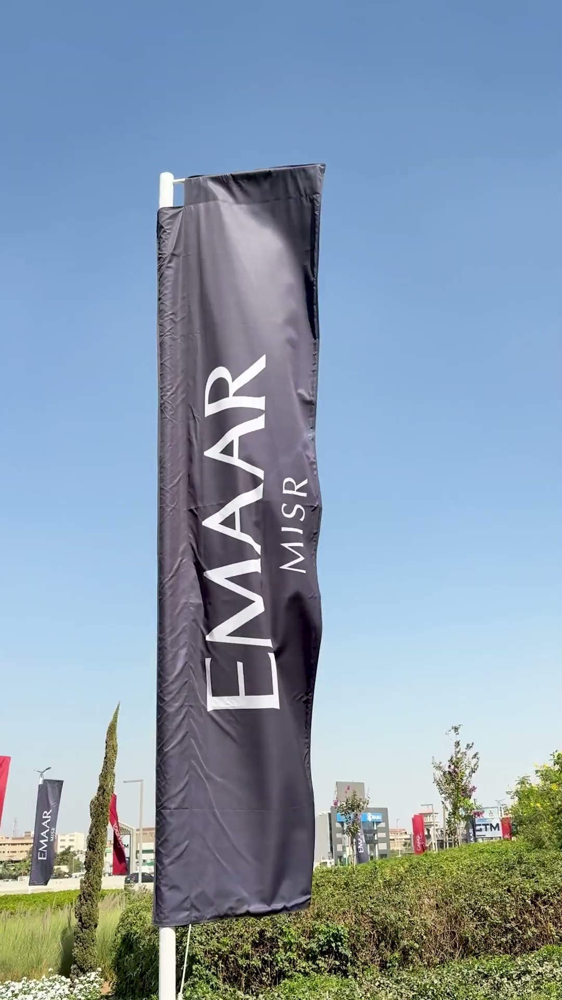

"Crafting stories through light, movement, and emotion."
A showcase of distinct productions demonstrating editorial composition, dynamic camera movement, and specialized lighting direction.
21 verified video productions spanning commercials, medical campaigns, architectural showcases, and narrative music clips.
Demonstrated history of creative collaboration with established media networks, production houses, and broadcast organizations.
Currently collaborating with Tungsten Media as Director of Photography, filming commercial campaigns across luxury real estate, healthcare/medical brands, culinary cinematography, and high-production brand reels.
Professional cinematography and media production collaboration with SAT-7, an established Christian media organization, delivering high-standard visual storytelling for broadcasting and television programming.
Professional media and production collaboration with Alkarma Channel, executing high-standard visual direction and studio lighting for television broadcast productions.
Cinematography and media production collaboration with NextGen, a Christian organization, capturing dynamic live events, conference imagery, and engaging visual campaigns.
Professional visual collaboration with Praise Center, a Christian organization, providing dedicated camera direction and cinematic lighting for services, music events, and community media.

A Director of Photography committed to translating narrative vision and brand identity into evocative, cinematic imagery.
With 4 years of hands-on experience in cinematography and visual storytelling, I specialize in shaping atmosphere through intentional lighting, motivated camera movement, and meticulous frame composition. Whether crafting intimate tabletop culinary commercials, crisp modern clinical showcases, or dynamic music video sequences, my focus remains steadfast: serving the story through light and visual emotion.
From pre-production visual concepts to on-set camera direction and color pipeline alignment, I work collaboratively with production crews, creative directors, and media organizations to deliver visual experiences that resonate.
Motivated three-point lighting, controlled soft-box diffusion, chiaroscuro contrast, and deliberate color temperature styling.
Fluid gimbal tracking, stable slider glides, intentional handheld energy, and rack-focus precision to guide viewer immersion.
Widescreen 16:9 and social-first 9:16 framing, leading architectural lines, negative space balance, and depth separation.
Seamless integration with directors, gaffers, colorists, and client teams to ensure technical efficiency and visual excellence.
Selected frame captures from recent productions illustrating lighting setups, surface textures, and color grading consistency.
Available for commercial campaigns, narrative films, music videos, healthcare reels, and creative media productions. Reach out directly to discuss your upcoming project or request availability.